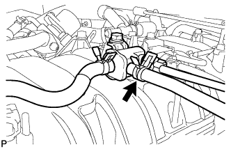

EMISSION CONTROL SYSTEM > ON-VEHICLE INSPECTION |
| 1. CHECK PURGE VSV |
Connect the intelligent tester to the DLC3.
Remove the V-bank cover (Click here).
|  |
Disconnect the hose (connected to the canister) from the purge VSV.
Start the engine and turn the intelligent tester on.
Enter the following menus: Powertrain / Engine and ECT / Active Test / Activate the VSV for EVAP Control.
| Tester Operation | Specified Condition |
| EVAP VSV: OFF | Purge VSV has no suction |
| EVAP VSV: ON | Purge VSV has suction |
Connect the hose (connected to the canister) to the purge VSV.
Install the V-bank cover (Click here).
| 2. INSPECT FUEL CUT-OFF RPM |
Start and warm up the engine.
Open the throttle valve and maintain the engine speed at 3000 rpm.
Use a sound scope to check for injector operating sounds.
Check that when the accelerator pedal is released, injector operating sounds stop momentarily and then resumes.
If the result is as not specified, check the injector, wiring and ECM.
| 3. VISUALLY INSPECT HOSES, CONNECTIONS AND GASKETS |
Check that there are no cracks, leaks or damage.
| 4. CHECK HOSES AND CONNECTORS |
Visually check for loose connections, sharp bends or damage.
| 5. CHECK FUEL TANK ASSEMBLY |
Visually check for deformation, cracks or fuel leakage.
| 6. INSPECT SECONDARY AIR INJECTION SYSTEM OPERATION |
Start the engine and warm it up.
Turn the engine switch off.
Connect the intelligent tester to the DLC3.
Turn the engine switch on (IG) and turn the intelligent tester on.
Enter the following menus: Powertrain / Engine and ECT / Utility / Air Injection Check / Manual Mode / AIR PUMP: ON, ASV1: OPEN, ASV2: OPEN and AIR PUMP: OFF, ASV1: CLOSE, ASV2: CLOSE.
Start the engine.
Perform the AIR system intrusive operation while the engine is idling.
Check that the air pump (AIR PUMP), ASV and pressure in the AIR system passage (PRESSURE) status displayed on the intelligent tester indicate the conditions shown in the table below.
| Tester Operation | AIR PUMP | ASV | PRESSURE*1 | PULSATION*2 |
| AIR PUMP: ON, ASV: OPEN | ON | ON | 2.4 kPa or higher | 20 kPa or higher |
| AIR PUMP: OFF, ASV: CLOSE | OFF | OFF | Below 2.4 kPa | Below 30 kPa |
Turn the engine switch off.